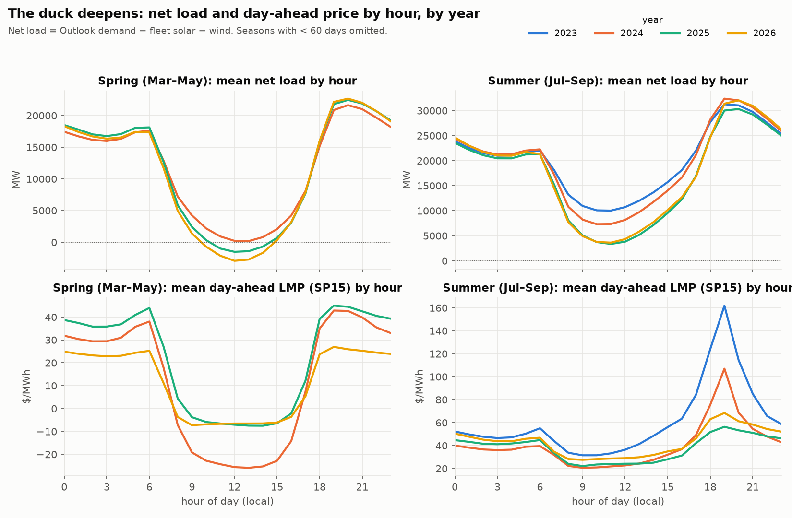
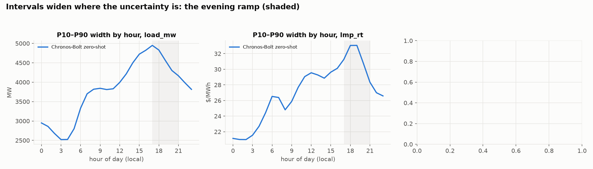
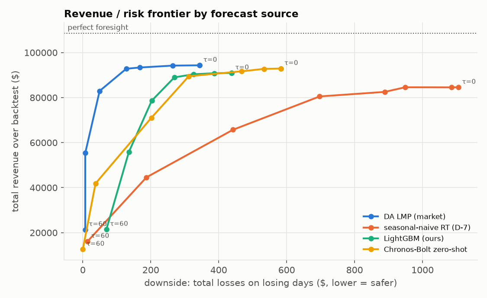

Every afternoon a job commits tomorrow's 24-hour SP15 load & real-time price forecast to the repo before the day-ahead market clears, then grades it against actuals the next day. Baseline that counts: CAISO's own published day-ahead load forecast; for price, the day-ahead LMP.
4 days graded. LightGBM beat CAISO's official load forecast on 25% of days. Mean load MAE: ours 727 MW vs CAISO 591 MW; RT price MAE: ours $9.8 vs DA LMP $8.5.
| entrant / target | mean MAE | days |
|---|---|---|
| gbm load_mw MAE | 727.5 | 4 |
| chronos load_mw MAE | 2,370.5 | 4 |
| naive_168 load_mw MAE | 8,027.2 | 4 |
| caiso load_mw MAE | 590.7 | 4 |
| gbm lmp_rt MAE | 9.8 | 4 |
| chronos lmp_rt MAE | 12.5 | 4 |
| naive_168 lmp_rt MAE | 22.7 | 4 |
| da_lmp lmp_rt MAE | 8.5 | 4 |
| gbm lmp_da MAE | 3.8 | 4 |
| chronos lmp_da MAE | 9.4 | 4 |
| naive_168 lmp_da MAE | 25.9 | 4 |
**Grid briefing for 2026-10-17** (issued 2026-10-16T19:41:12Z UTC, model trained through 2026-10-15). Forecast peak load 33,627 MW at 17:00 local (P10–P90 31,418–33,627); overnight minimum 22,284 MW. Afternoon-to-evening rise about 9,325 MW. Real-time SP15 price: median peak $55/MWh at 18:00, P90 $70 (mean-model peak $54, which sits above P90 when the day is skewed); daily median $47. Uncertainty band is narrower on the evening ramp (1,533 MW) than at midday (2,429 MW). Chronos zero-shot peak 29,163 MW (below ours by 4,464 MW).
| target_date | issued_at_utc | graded_at_utc | gbm__load_mw__MAE | gbm__load_mw__cov80 | chronos__load_mw__MAE | chronos__load_mw__cov80 | naive_168__load_mw__MAE | caiso__load_mw__MAE | gbm__lmp_rt__MAE | gbm__lmp_rt__cov80 | chronos__lmp_rt__MAE | chronos__lmp_rt__cov80 | naive_168__lmp_rt__MAE | da_lmp__lmp_rt__MAE | gbm__lmp_da__MAE | gbm__lmp_da__cov80 | chronos__lmp_da__MAE | chronos__lmp_da__cov80 | naive_168__lmp_da__MAE | actual_peak_load_mw | actual_max_rt_lmp |
|---|---|---|---|---|---|---|---|---|---|---|---|---|---|---|---|---|---|---|---|---|---|
| 2026-10-15 | 2026-10-14T20:16:14Z | 2026-10-16T19:42:05Z | 806.2 | 0.5 | 966.2 | 1.0 | 7,742.0 | 941.8 | 9.9 | 0.5 | 14.1 | 0.6 | 21.9 | 10.3 | 2.8 | 0.8 | 3.1 | 1.0 | 19.6 | 31,028.0 | 59.8 |
| 2026-10-14 | 2026-10-13T21:17:55Z | 2026-10-16T19:42:05Z | 577.2 | 0.5 | 1,812.8 | 0.8 | 10,453.8 | 271.3 | 10.7 | 0.2 | 13.6 | 0.7 | 24.1 | 8.2 | 1.9 | 0.9 | 6.2 | 1.0 | 32.6 | 28,150.0 | 67.6 |
| 2026-10-13 | 2026-10-13T04:54:22Z | 2026-10-14T20:17:03Z | 780.7 | 0.6 | 4,052.9 | 0.4 | 11,525.5 | 416.9 | 11.4 | 0.3 | 11.0 | 0.6 | 32.9 | 9.7 | 4.7 | 0.6 | 11.3 | 0.6 | 42.6 | 27,656.0 | 72.2 |
| 2026-10-09 | 2026-10-09T00:17:44Z | 2026-10-13T04:54:52Z | 745.9 | 0.5 | 2,650.2 | 0.5 | 2,387.6 | 732.8 | 7.2 | 1.0 | 11.5 | 0.7 | 12.0 | 5.7 | 5.6 | 0.9 | 17.1 | 0.7 | 8.7 | 37,094.0 | 54.7 |
# Tournament scoreboard — walk-forward 2024-07-01 → 2026-09-06 Identical rows, identical splits for every entrant. Spike/severe = hours whose actual DA LMP ≥ p95 / p99 of the full window. Weather features: strict variant (no run newer than the 09:00 D-1 origin). ## target `load_mw` — MAE (MW), n=19143 hours | split | CAISO official DA forecast | Chronos-Bolt zero-shot | LightGBM (ours) | seasonal-naive (D-7) | |:-----------------|-----------------------------:|-------------------------:|------------------:|-----------------------:| | all | 512.1 | 1202.1 | 728.9 | 1891.6 | | regime=normal | 504.5 | 1183.7 | 712 | 1863 | | spike+severe | 884.5 | 2109.7 | 1557.5 | 3298.1 | | regime=severe | 1413.5 | 3237.3 | 3065.3 | 5190.9 | | ramp hours 17-21 | 566.6 | 1580.9 | 843.6 | 2366.3 | RMSE / bias / MAPE, all hours: | model | RMSE | bias | MAPE | |:---------------------------|--------:|-------:|-------:| | Chronos-Bolt zero-shot | 1814.79 | 3.7 | 4.82 | | LightGBM (ours) | 1066.21 | -28.59 | 2.93 | | CAISO official DA forecast | 719.17 | 106.96 | 2.1 | | seasonal-naive (D-7) | 2830.5 | 20.22 | 7.51 | By season (MAE): | split | CAISO official DA forecast | Chronos-Bolt zero-shot | LightGBM (ours) | seasonal-naive (D-7) | |:--------------|-----------------------------:|-------------------------:|------------------:|-----------------------:| | season=autumn | 414.5 | 896.8 | 579.2 | 1520.6 | | season=spring | 462 | 1195.7 | 565.5 | 1534.5 | | season=summer | 621.1 | 1592.2 | 913.9 | 2676.9 | | season=winter | 440.6 | 740.6 | 677 | 1148.6 | By year (MAE): | year | CAISO official DA forecast | Chronos-Bolt zero-shot | LightGBM (ours) | seasonal-naive (D-7) | |-------:|-----------------------------:|-------------------------:|------------------:|-----------------------:| | 2024 | 588.8 | 1381.5 | 1048.7 | 2362.7 | | 2025 | 475.6 | 1079.8 | 631.6 | 1622.2 | | 2026 | 509 | 1249.3 | 635.8 | 1939.4 | ## target `lmp_rt` — MAE ($/MWh), n=19152 hours | split | Chronos-Bolt zero-shot | DA LMP (market) | LightGBM (ours) | seasonal-naive RT (D-7) | |:-----------------|-------------------------:|------------------:|------------------:|--------------------------:| | all | 9.8 | 7.2 | 9.9 | 14.2 | | regime=normal | 9 | 6.3 | 9 | 13.2 | | spike+severe | 48.6 | 48.3 | 57 | 62.5 | | regime=severe | 105.5 | 147.2 | 112.4 | 112.8 | | ramp hours 17-21 | 12.8 | 10.8 | 14.5 | 18.7 | RMSE / bias, all hours: | model | RMSE | bias | |:------------------------|-------:|-------:| | Chronos-Bolt zero-shot | 22.21 | -1.52 | | LightGBM (ours) | 23.35 | 1.11 | | DA LMP (market) | 19.58 | 1.56 | | seasonal-naive RT (D-7) | 31.13 | 0.03 | By season (MAE): | split | Chronos-Bolt zero-shot | DA LMP (market) | LightGBM (ours) | seasonal-naive RT (D-7) | |:--------------|-------------------------:|------------------:|------------------:|--------------------------:| | season=autumn | 9.1 | 6.7 | 7.6 | 11.7 | | season=spring | 9.9 | 6.6 | 8.5 | 13.7 | | season=summer | 10.5 | 8.2 | 11.9 | 16.3 | | season=winter | 9 | 6.4 | 9.5 | 12.9 | ## target `lmp_da` — MAE ($/MWh), n=19152 hours | split | Chronos-Bolt zero-shot | LightGBM (ours) | naive DA (D-2) | seasonal-naive DA (D-7) | |:-----------------|-------------------------:|------------------:|-----------------:|--------------------------:| | all | 6.8 | 5.1 | 8.7 | 10.7 | | regime=normal | 6.2 | 4.6 | 8.1 | 9.9 | | spike+severe | 36.5 | 32.4 | 39.1 | 49.1 | | regime=severe | 128.8 | 108.3 | 114.2 | 149.6 | | ramp hours 17-21 | 9.3 | 7.2 | 10.8 | 14.4 | RMSE / bias, all hours: | model | RMSE | bias | |:------------------------|-------:|-------:| | Chronos-Bolt zero-shot | 13.2 | -0.91 | | LightGBM (ours) | 10.97 | -0.15 | | naive DA (D-2) | 16.27 | -0.03 | | seasonal-naive DA (D-7) | 19.88 | -0 | By season (MAE): | split | Chronos-Bolt zero-shot | LightGBM (ours) | naive DA (D-2) | seasonal-naive DA (D-7) | |:--------------|-------------------------:|------------------:|-----------------:|--------------------------:| | season=autumn | 6.2 | 4.2 | 8.4 | 9 | | season=spring | 6.6 | 4.6 | 8.6 | 9.7 | | season=summer | 7.4 | 5.7 | 9.2 | 12.2 | | season=winter | 6.2 | 5.3 | 7.9 | 10.2 | ## Weather-input ablation (LightGBM, load) strict = honest (no run after the origin); lenient = previous_day1 for all hours (up to 14 h fresher than allowed); observed = ERA5 (leakage ceiling). | weather variant | MAE | RMSE | bias | MAPE | MAE spike+severe | |:------------------|------:|-------:|-------:|-------:|-------------------:| | strict | 729.4 | 1067.2 | -29.3 | 2.9 | 1571.4 | | lenient | 713 | 1041 | -10.5 | 2.9 | 1558.8 | | observed | 670.3 | 973.7 | -42.9 | 2.7 | 1646.5 |



Source: github.com/anjalimitt2k/anjaliprojects. Rendered 2026-10-16 19:42 UTC.